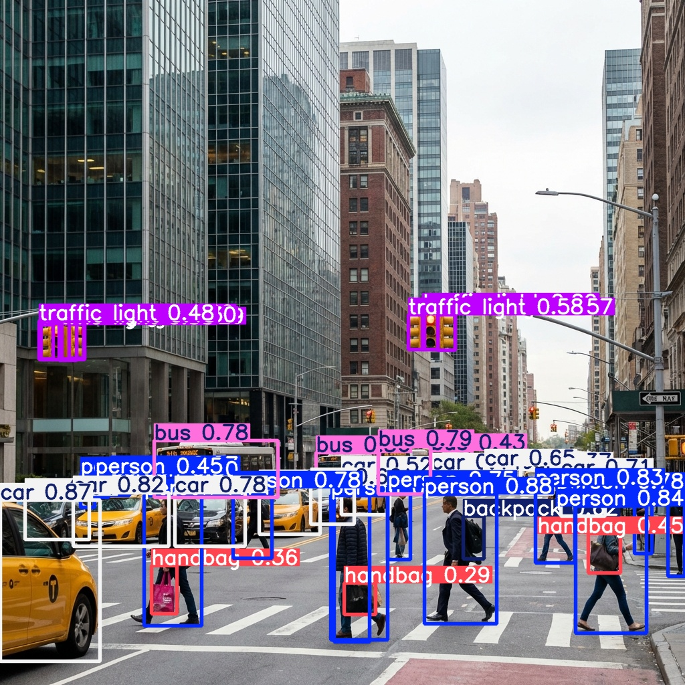
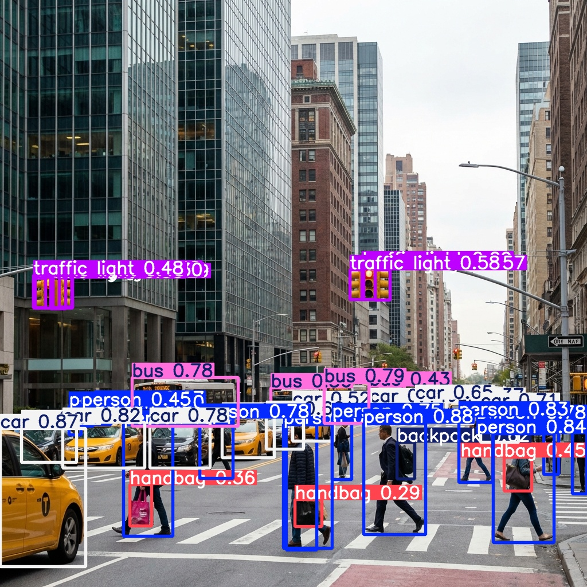
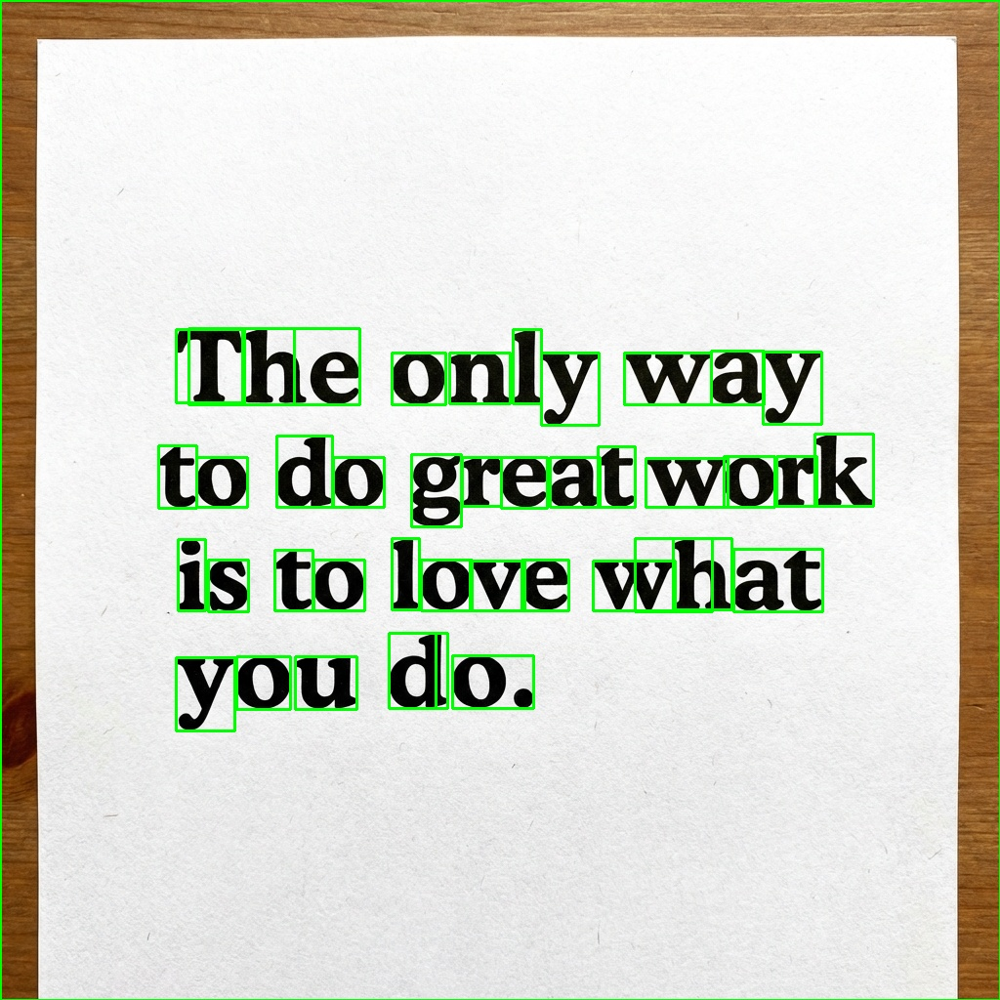
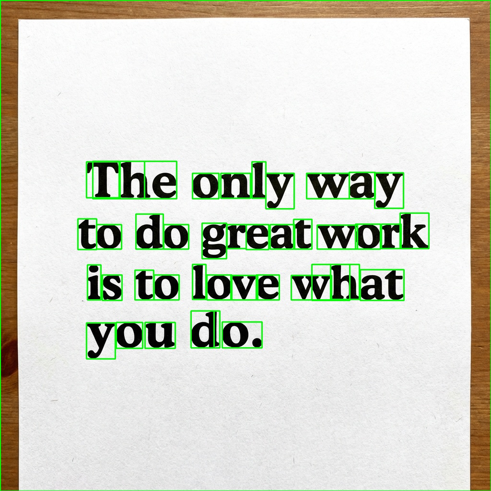
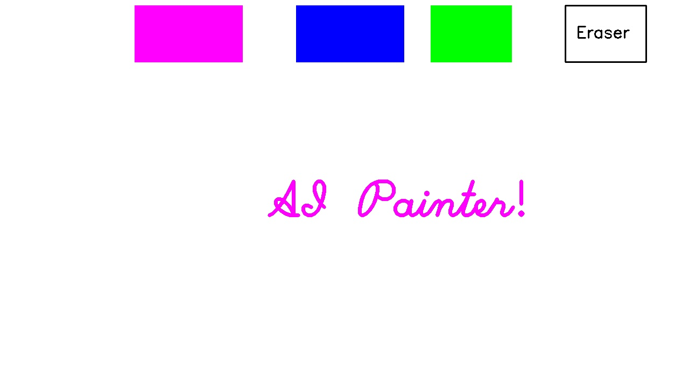
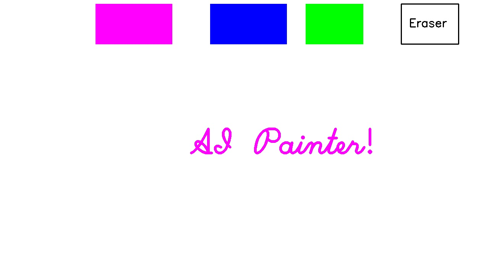
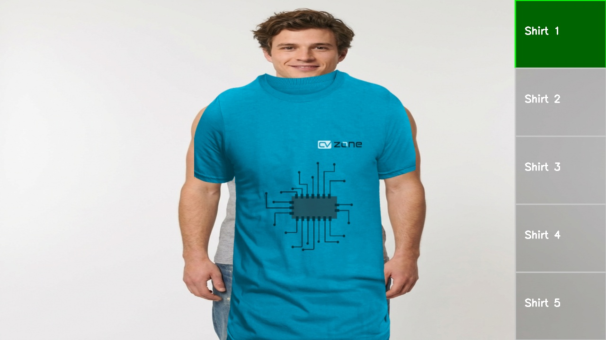
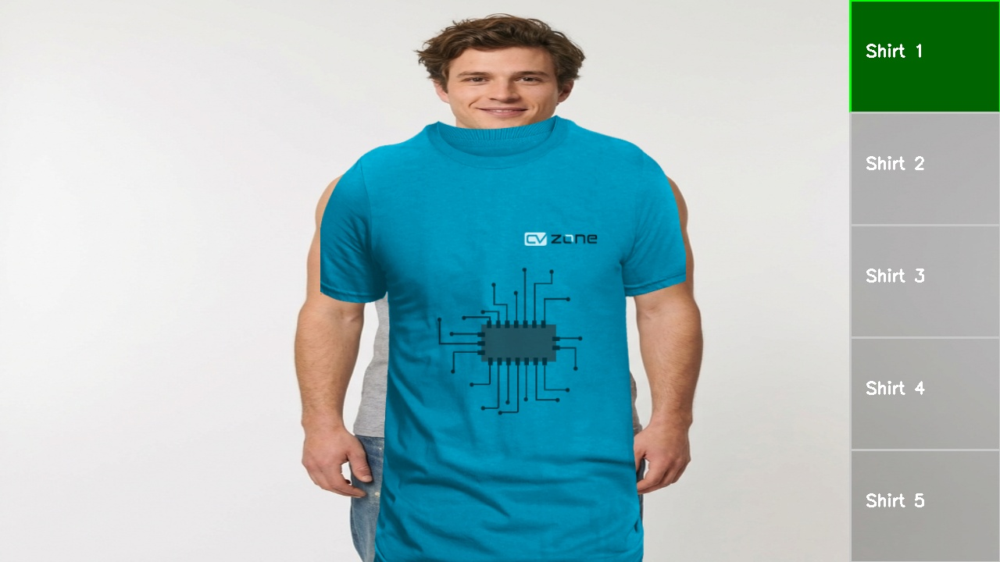

Face Detection
Real-time face detection using Haar Cascades. Identifies and highlights faces in images with bounding boxes.
 

Object Detection
State-of-the-art object detection identifying multiple classes (cars, people, etc.) in complex urban environments.

Image Segmentation
Semantic segmentation partitioning an image into meaningful segments, classifying every pixel.
 

OCR Scanner
Optical Character Recognition system extracting text from images and overlaying bounding boxes on detected characters.


Hand Tracking
Real-time hand landmark detection and tracking, capable of recognizing gestures and finger positions.
Lane Detection
Detecting road lanes using Edge Detection and Hough Transformation, a fundamental technique in autonomous driving.
 

AI Virtual Painter
"Air Canvas" interface allowing users to draw on screen using hand landmarks. Features gesture mode selection.
 

Virtual Try-On
AR application overlays clothing on the user in real-time by tracking shoulder landmarks.